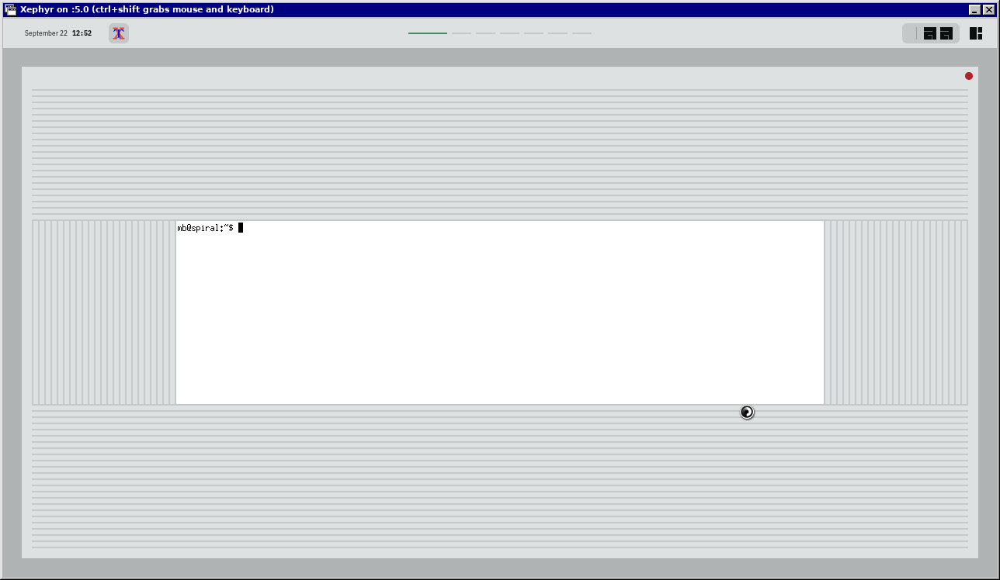
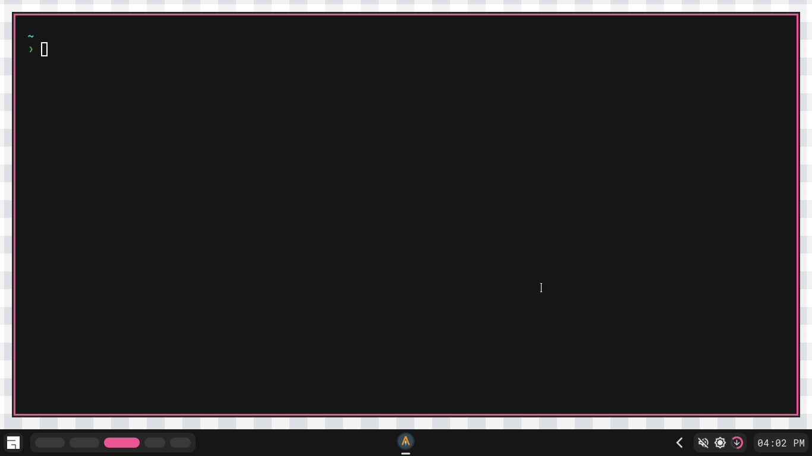
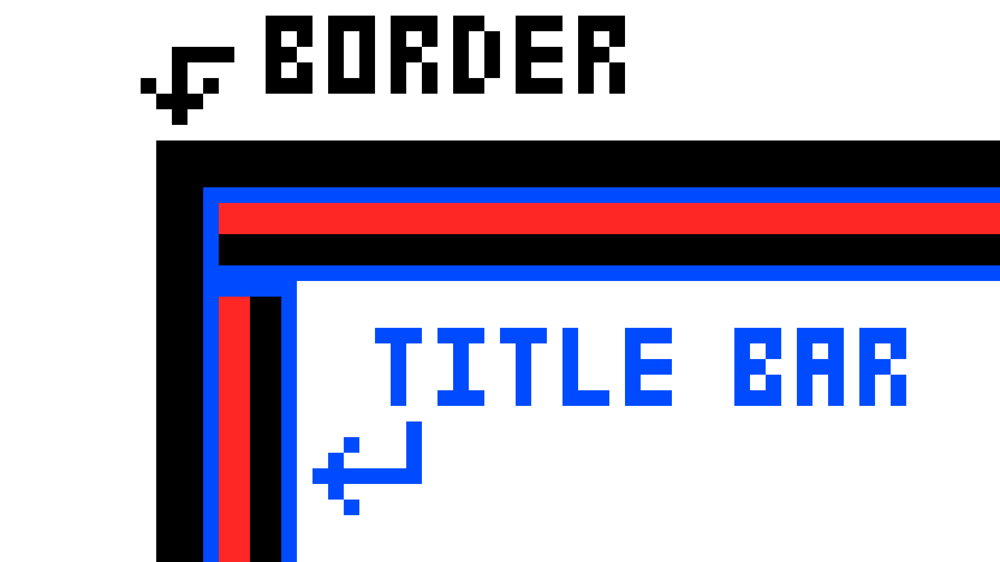
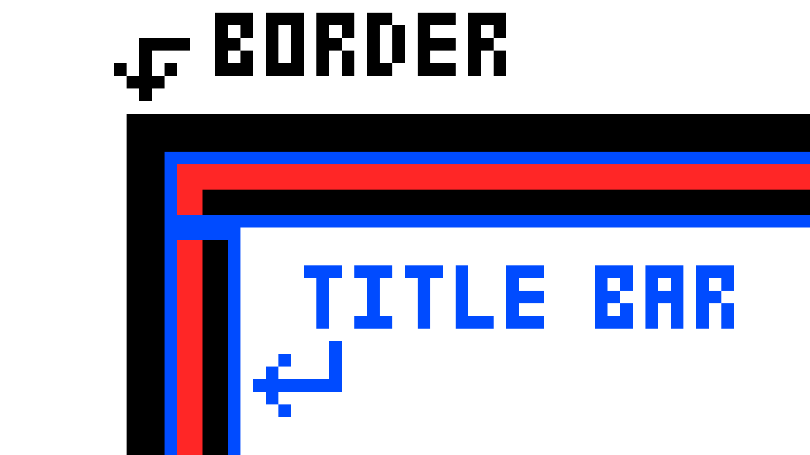
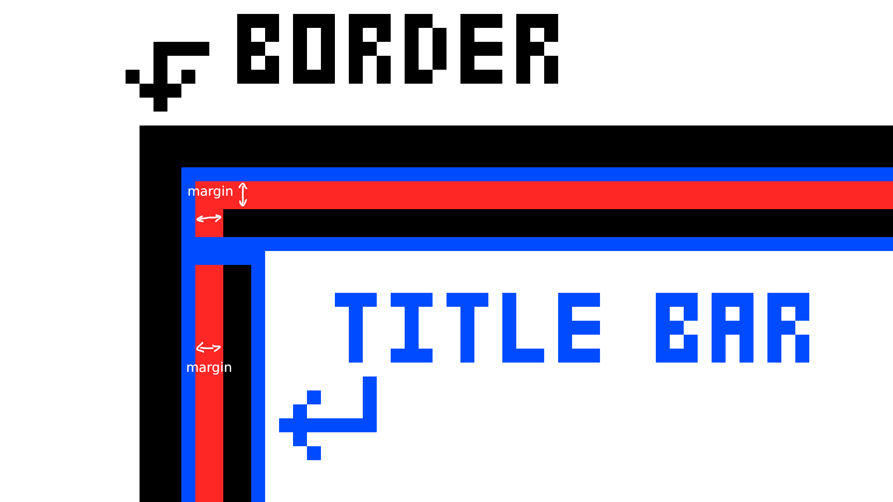
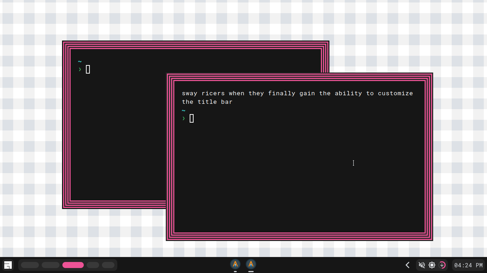

Drawing n borders (where n∈ℤ, n>1) in awesomewm
1/9/2024
Alternate title: Sway user gets hold of title bar customization for the first time.
Inspiration and History
Most windows in window managers would have a border around it. Borders are effective and viable because their colour could be used to determine the state of the window. For example, urgent windows would have a bright red colour to indicate urgency.
There is no doubt that borders are a practical and important feature of window managers, but what if we hated practicality and just wanted to waste our time?
Around September 2023, r/unixporn started rumoring about the possibility of creating n borders using the power of awesome (awesome window manager). Double and triple borders had been proven to be possible, and had been a trend some time in the past, but no one was clinically insane enough to add more borders. No one except for sewergweller, who thought it was a pretty funny idea. The following was their attempt.
Unfortunately for sewergweller, the corners are not drawn properly, so this does not fully count as n border, although it is close. It is unknown whether sewergweller ever succeeded in fixing the corners as there is no further follow up after this image.
Creating n borders (n∈ℤ, n>1)
Base case: Double borders (n=2)
The idea behind 2 borders in awesome is simple. It builds off awesome's ability to attach title bars on any sides of any window. By attaching a title bar with the width of a border on all sides, and setting it all to the same colour, we can artificially create a border. Awesome provides a border by default, so we essentially have 2 borders.

client.connect_signal("request::titlebars", function(c)
local width = beautiful.border_width
local col = beautiful.accent
awful.titlebar(c, { position = "left", size = width, bg = col})
awful.titlebar(c, { position = "right", size = width, bg = col})
awful.titlebar(c, { position = "top", size = width, bg = col})
awful.titlebar(c, { position = "bottom", size = width, bg = col})
end)
Induction step: n borders, (n∈ℤ, n>2)
Having more than 2 borders is the tricky bit. We can't use sewergweller's method of adding n bars into each title bar because we would end up with corners that aren't drawn.
Instead of this, we need to draw the top title bar in a way that lets us perceive the corners as normal.
To do this, we will make a box within a box. The child box will have a set margin such that they are not covering up their parent box.
This makes 3 borders, what if we wanted more? Well, just do it again! Make more children! Add another boxes in the innermost box! Do it n times!
Here's how I did it.
client.connect_signal("request::titlebars", function(c)
local width = beautiful.border_width
local col1 = beautiful.accent
local col2 = beautiful.bg_focus
-- this excludes the outer border (the real border)
local n = 7
local create_borders = function (left, right, top, bottom)
-- creates borders recursively
-- I'm lazy, so the function is generalised for all titlebar positions
local box = wibox.widget {
{
left = left,
right = right,
top = top,
bottom = bottom,
widget = wibox.container.margin
},
bg = col1,
widget = wibox.container.background
}
local cur = box
-- n-1 because the first one is one of the n borders
for i = 1, n-1 do
local new = wibox.widget {
{
left = left,
right = right,
top = top,
bottom = bottom,
widget = wibox.container.margin
},
-- toggle between the 2 colors
bg = (i%2 == 0) and col1 or col2,
widget = wibox.container.background
}
cur.children[1].widget = new
cur = new
end
return box
end
awful.titlebar(c, { position = "left", size = width*n }):setup{
create_borders(width, 0, 0, 0),
layout = wibox.layout.flex.horizontal
}
awful.titlebar(c, { position = "right", size = width*n }):setup{
create_borders(0, width, 0, 0),
layout = wibox.layout.flex.horizontal
}
awful.titlebar(c, { position = "top", size = width*n }):setup{
create_borders(width, width, width, 0),
layout = wibox.layout.flex.horizontal
}
awful.titlebar(c, { position = "bottom", size = width*n }):setup{
create_borders(width, width, 0, width),
layout = wibox.layout.flex.horizontal
}
end)

Small side story
You might have noticed that the desktop appears "smaller" than usual. That is because I was using a backup laptop.
During the creation of this Blog, My main laptop was under repair, which meant that I couldn't use it for the following few weeks. For someone like me, this is majorly inconvenient as my laptop is my main source of entertainment.
Placed in this predicament, I was left with no choice but to bring out the big guns, and use my backup.

Specs:
- 32GB storage
- 2GB or ram
- Intel Celeron N2840
- No GPU
- 11.6 inch screen
This laptop was given to me from a friend a few years ago, as it was on the brink of death. I named it Gilgamesh, the Consumer of Universes. Since Gilgamesh was way too weak and old, it could no longer run Windows 10, giving me the opportunity to install and try Linux on it (for the first time). There was also a time when I decided to run Gilgamesh 24/7 as a server for a whole year, the photo above was taken on day 100 of its uptime.
Since I didn't have access to my main laptop, I had to use Gilgamesh for my daily shenanigans, including the coding part of this blog.
Somehow, Gilgamesh is still working to this day, despite the pain and troubles it has gone through (mostly my fault). For this reason, it has my respect and appreciation. Thank you very much Gilgamesh.
-Failed